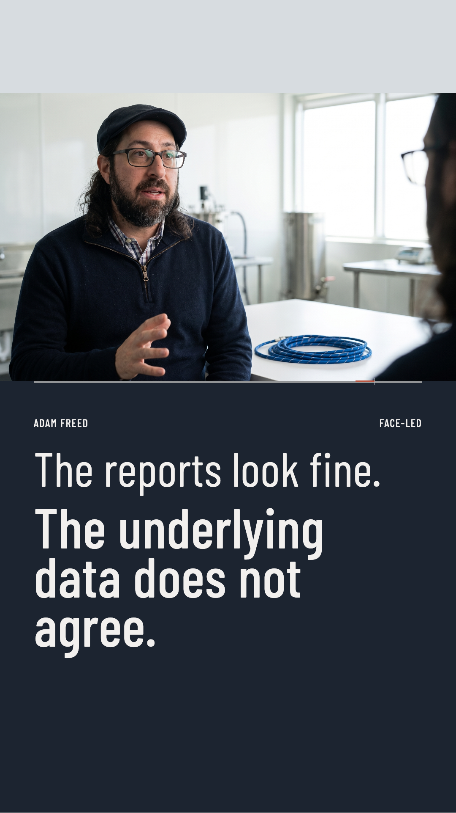
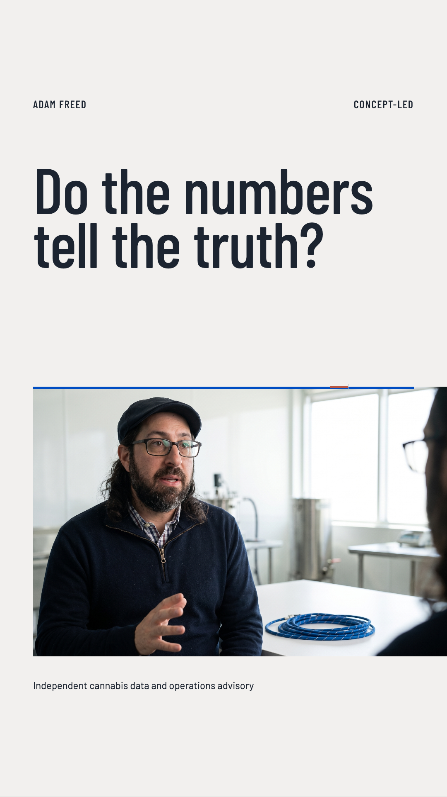
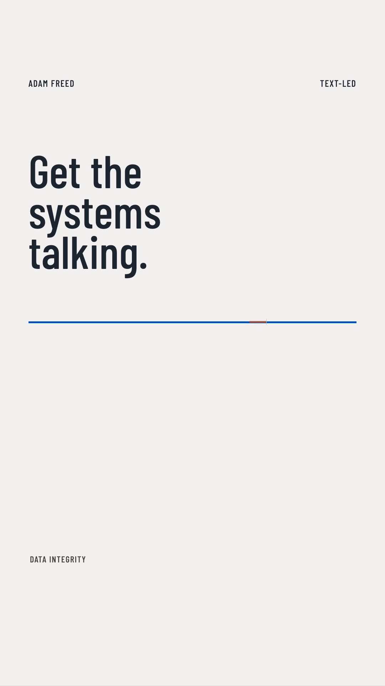
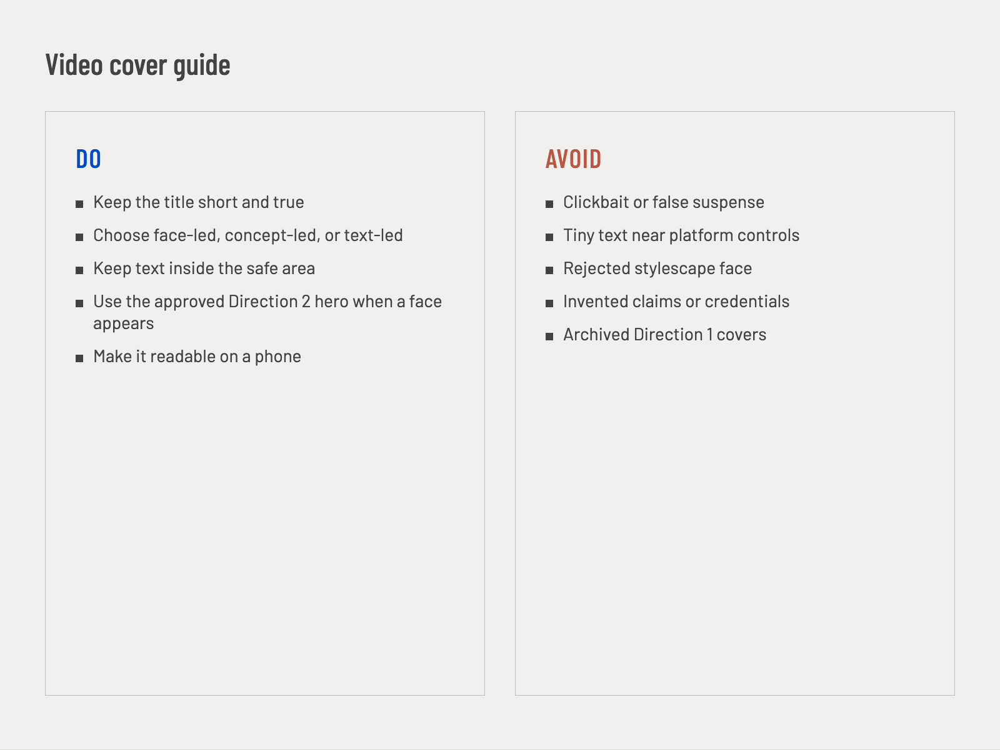

Section C
Video Covers
See and use the short-form cover system.
01
Finished cover examples
Face-led, concept-led, and text-led 9:16 covers.



02
Cover layouts
Adam is the main focus.
The operating question or idea is the main focus.
The title is the main focus.
03
Keep it consistent

04
Use with AI
- Use approved image and face references only
- Provide the exact title and source image
- Choose face-led, concept-led, or text-led
- Do not invent claims, results, or credentials
- Check the face, crop, title, and phone-size readability
- Never use the temporary stylescape as a likeness source